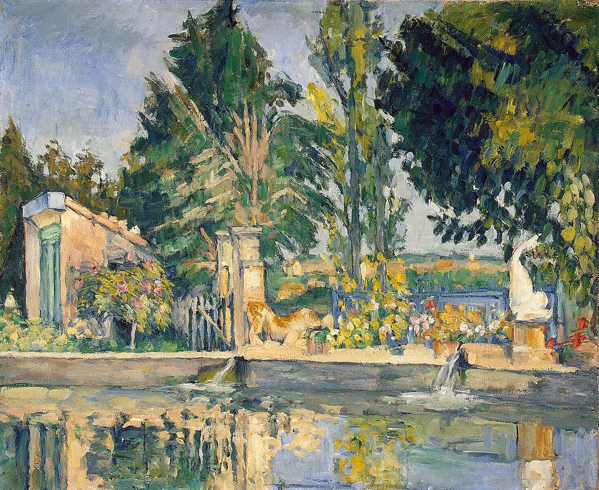

<head>
<meta charset="UTF-8" />
<meta name="keywords" content="drawing, painting" />
<meta name="description" content="drawings by Sunjy" />
<title>Sunjy</title>
<link rel="shortcut icon" type="image/x-icon" href="../../mImages/mCommon/favicon.ico" media="screen" />
<link rel="stylesheet" type="text/css" href="../../mCsses/mCommon/mCssA.css" />
<link rel="stylesheet" type="text/css" href="../../mCsses/mCommon/mCssB.css" />
<link rel="stylesheet" type="text/css" href="../../mCsses/mCommon/mCssC.css" />
<link rel="stylesheet" type="text/css" href="../../mCsses/mCommon/mCssD.css" />
<link rel="stylesheet" type="text/css" href="../../mCsses/mContent/mCssA.css" />
<link rel="stylesheet" type="text/css" href="../../mCsses/mContent/mCssB.css" />
<link rel="stylesheet" type="text/css" href="../../mCsses/mContent/mCssC.css" />
<link rel="stylesheet" type="text/css" href="../../mCsses/mContent/mCssD.css" />
</head>
<script type="text/javascript" src="../../mScripts/mContent/mContentAA.js" /></script>
<script type="text/javascript" src="../../mScripts/mContent/mContentAB.js" /></script>
<script type="text/javascript" src="../../mScripts/mContent/mContentAC.js" /></script>
<script type="text/javascript" src="../../mScripts/mContent/mContentAD.js" /></script>
<script type="text/javascript"></script> 
<script type="text/javascript">
document.write('<div class="mImgAbsolute"></div>');
/*
document.write('<p class="mFontSizeBColor" />From a white paper...</p>');
document.write('<table class="center"><tr><td>');
document.write('');
document.write('</td></tr></table>');
*/
</script>


<script type="text/javascript">
document.write('<p class="mFontSizeBColor" />Le Bassin du Jas de Bouffan</p>');
document.write('<p class="mFontSizeSColor" />“Le Bassin du Jas de Bouffan” by Paul Cézanne depicts the pond at the Bastide du Jas de Bouffan which is a historic manor house in Aix-en-Provence, France. <br><br>The bastide was purchased by banker Louis-Auguste Cézanne, the father of famed painter Paul Cézanne, in 1859. In 1880, Paul Cézanne established a studio in the attic. After his father’s death, he lived in the manor with his mother.<br><br>Paul Cézanne created several paintings portraying the pool, gardens, and many of the available views from multiple different vantage points.<br><br>In this painting, the pool is shown in its idyllic form. The greenery provides the overall color scheme, and the harmony of the tones demonstrated his masterly grasp of color.<br><br>The architectural and sculptural elements include the lion of yellow sandstone and the dolphin flipping its tail up.<br><br>Cézanne included the action of the pool being filled with water from two pipes, which distorted the reflections with the ripples.<br><br>The landscape was painted from life, capturing the grey-blue tone of the sky, on that day with the green of Provence, and its yellow soil. <br></p>');
document.write('<table class="center" /><tr><td>');
document.write('<br>The bastide was purchased by banker Louis-Auguste Cézanne, the father of famed painter Paul Cézanne, in 1859. In 1880, Paul Cézanne established a studio in the attic. After his father’s death, he lived in the manor with his mother.<br><br>Paul Cézanne created several paintings portraying the pool, gardens, and many of the available views from multiple different vantage points.<br><br>In this painting, the pool is shown in its idyllic form. The greenery provides the overall color scheme, and the harmony of the tones demonstrated his masterly grasp of color.<br><br>The architectural and sculptural elements include the lion of yellow sandstone and the dolphin flipping its tail up.<br><br>Cézanne included the action of the pool being filled with water from two pipes, which distorted the reflections with the ripples.<br><br>The landscape was painted from life, capturing the grey-blue tone of the sky, on that day with the green of Provence, and its yellow soil. <br>" />');
document.write('</td></tr></table>');
</script>


